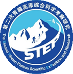
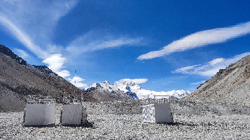
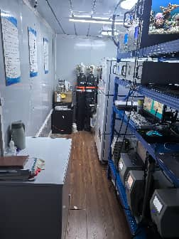
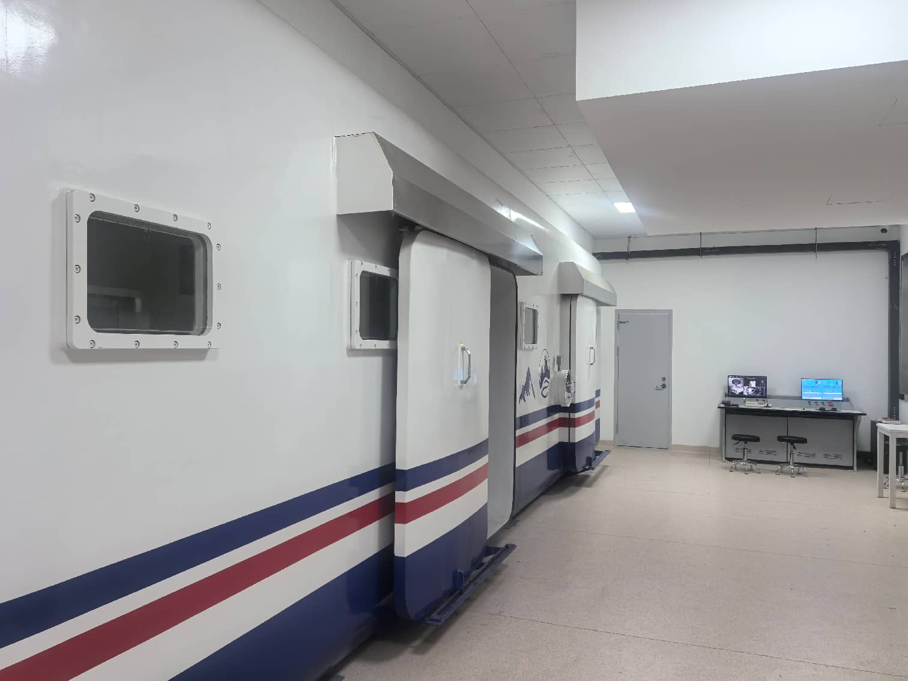
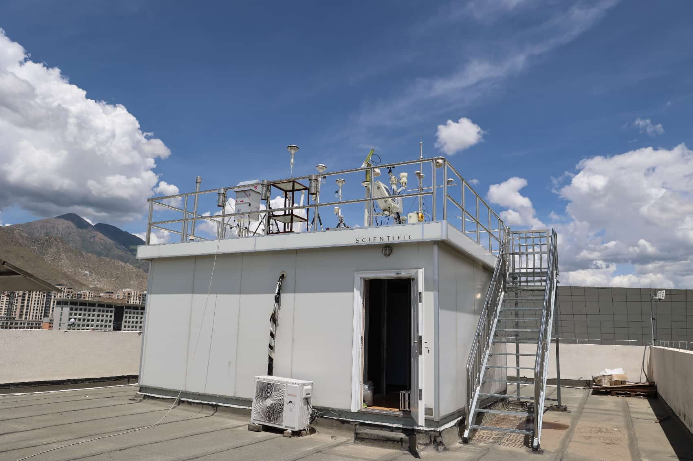
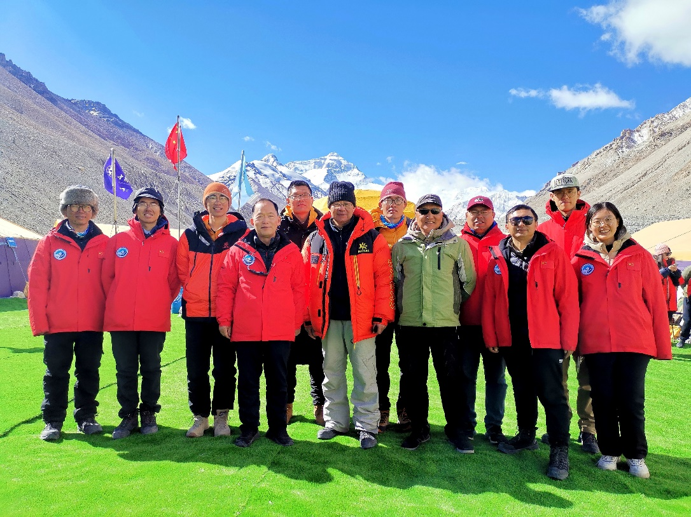
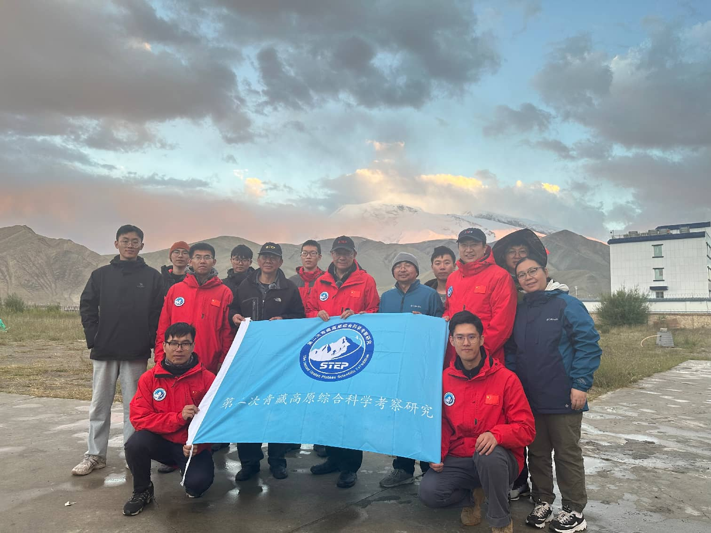
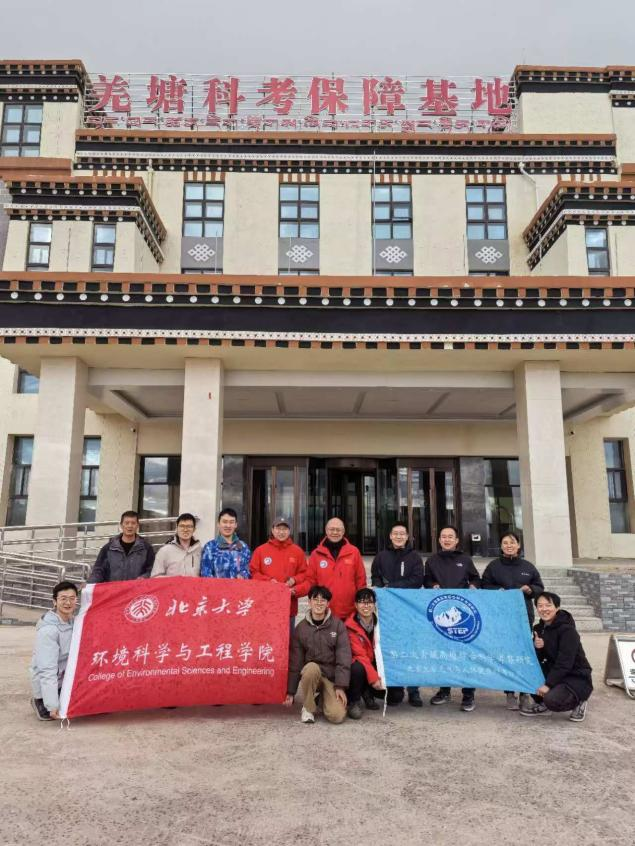
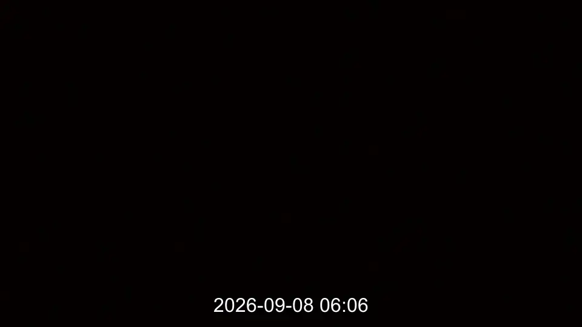
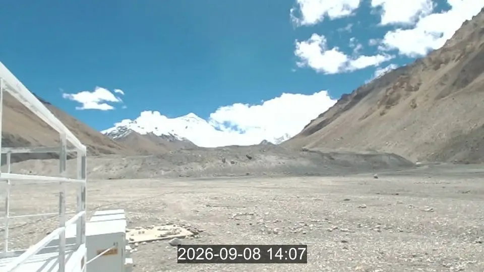

院士工作站简介
面向青藏高原生态环境与人体健康研究，工作站依托珠峰、拉萨等典型海拔梯度观测站，持续采集大气环境、气象因子与生态过程数据，为高原环境变化评估和科考协同提供基础支撑。
3协同观测站
24h连续监测
16核心仪器

面向青藏高原生态环境与人体健康研究，工作站依托珠峰、拉萨等典型海拔梯度观测站，持续采集大气环境、气象因子与生态过程数据，为高原环境变化评估和科考协同提供基础支撑。
| 中文全称 | 中文简称 | 英文全称 |
|---|---|---|
| 拉萨城市空气质量与环境健康综合观测站 | 拉萨站 | Lhasa Comprehensive Observation Station for Urban Air Quality and Environmental Health |
| 那曲高寒草地生态站 | 那曲站 | Nagqu Ecology Station for Alpine Meadow |
| 珠峰环境变化综合观测站 | 珠峰站 | Qomolangma Comprehensive Observation Station for Environmental Change |








